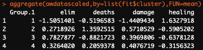

Back to all projects
Overwatch League is a professional eSports league based on the popular video game Overwatch. Players on each team in the league are assigned to one of 4 roles - Tank, DPS, Flex, and Healer. Each role has their own job to do, and may have a focus on dealing damage, healing their teammates, or swapping characters based on the opposing team's composition. I was curious to know whether Overwatch League professionals fit neatly into their defined "on paper" role, or whether certain players exhibit peculiar or divergent play styles. With this curiosity, I decided to do a clustering analysis.
Data sourced from https://overwatchleague.com/en-us/stats.
I sourced data from the Overwatch League website and imported it into R Studio. After a bit of cleaning and scaling, I determined the optimal number of clusters using the "elbow" method in addition to the a priori estimated cluster number of 4 (4 roles, 4 clusters).
R, Excel
I imported data into Tableau, where I created a series of visualizations to highlight the differences between clusters and view results.
Tableau
From the results, it was clear that some players were more "prototypical" with respect to their team role, while other players exhibit traits usually associated with different roles (i.e. healers that do a lot of damage). I learned that statistics can sometimes yield strange yet fascinating categories- different than how we as humans see the world, but just as valid. In the future, I'd like to get a richer dataset with more features available.

Viewing the means for each cluster, we can see which variables are higher and lower for each cluster. This allows us to determine which role each cluster is most similar to:
Cluster 1:
- Higher in healing
- Lower in eliminations
- Lower in damage
- Lower in deaths
"Healer-like" cluster
Cluster 2:
- Higher in deaths
- Higher in damage
"DPS-like" cluster
Cluster 3:
- Higher in eliminations
- Lower in deaths
"Tank-like" cluster
Cluster 4:
- Mixed
"Flex-like" cluster

#Load the Tidyverse & Cluster packages
library(tidyverse)
library(cluster)
#Read in data and attach it
ow <- read.csv("~/Desktop/ow.csv")
attach(ow)
#Select variables to cluster, saving to a new dataframe
owdata <- ow %>%
select(elim, deaths, damage, healing)
#Scale the variables and save to a new dataframe
owdatascaled <- scale(owdata)
#Determine the number of clusters
number_of_clusters <- c(0)
for(i in 2:15){
fit_determine_clusters <- kmeans(owdatascaled, i)
number_of_clusters[i] <- ((fit_determine_clusters$betweenss/fit_determine_clusters$totss))
}
plot(number_of_clusters,xlab="Number of Clusters", ylab="Percent Variance Explained")
#Run a K-Means algorithm for 4 clusters
(fit <- kmeans(owdatascaled, 4))
#View the cluster means
aggregate(owdatascaled,by=list(fit$cluster),FUN=mean)
#View the cluster plot
clusplot(owdatascaled,fit$cluster)
#Append cluster vector to original dataframe, and write to a CSV to put into Tableau
ow$cluster <- fit$cluster
write.csv(ow,"ow_clustering.csv")